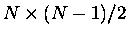

Given a suitable initial superimposition of structures,
the best way to obtain a multiple alignment and
superimposition of a diverse family of domains is to follow a
hierarchy of similarity. This allows most similar domains to be
compared/aligned first, and only makes comparisons/alignments
between distantly related domains at a later time in the procedure.
Pairwise comparisons are an ideal way to obtain such a hierarchy.
The PAIRWISE options in STAMP will result in all
comparisons being performed and will output a matrix of pairwise
similarities. This is then be used to produce a
dendrogram, or tree, from which multiple alignments and
superimpositions may be generated.